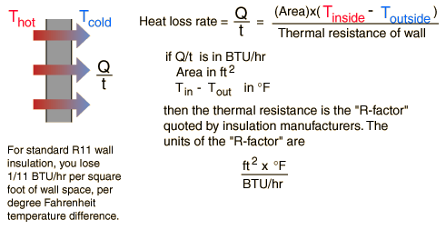
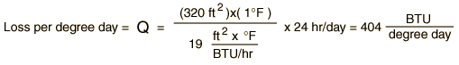
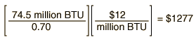

Calculating Home Heating Energy
Heat transfer from your home can occur by conduction, convection and radiation. It is typically modeled in terms of conduction, although infiltration through walls and around windows can contribute a significant additional loss if they are not well sealed. Radiation loss can be minimized by using foil-backed insulation as a radiation barrier.
The U.S. heating and air conditioning industry uses almost entirely the old British and U.S. common units for their calculations. For compatibility with the commonly encountered quantities, this example will be expressed in those units.

I. Calculate wall loss rate in BTUs per hour.
For a 10 ft by 10 ft room with an 8 ft ceiling, with all surfaces insulated to R19 as recommended by the U.S. Department of Energy, with inside temperature 68°F and outside temperature 28°F:
II. Calculate loss per day at these temperatures.
Heat loss per day = (674 BTU/hr)(24 hr) = 16168 BTU
Note that this is just the loss through the walls. The loss through the floor and ceiling is a separate calculation, and usually involves different R-values.
III. Calculate loss per "degree day".
This is the loss per day with a one degree difference between inside and outside temperature.

If the conditions of case II prevailed all day, you would require 40 degree-days of heating, and therefore require 40 degree-days x 404 BTU/degree day = 16168 BTU to keep the inside temperature constant.
IV. Calculate heat loss for entire heating season.
The typical heating requirement for an Atlanta heating season, September to May, is 2980 degree-days (a long-term average).
The typical number of degree-days of heating or cooling for a given geographical location can usually be obtained from the weather service.
V. Calculate heat loss per heating season for a typical uninsulated southern house in Atlanta.
The range of loss rates biven by DOE for uninsulated typical dwellings is 15,000 to 30,000 BTU/degree-day. Choosing 25,000 BTU/degree-day:
VI. Calculate annual heating cost.
Assume natural gas cost of $12 per million BTU in a furnace operating at 70% efficiency.

Assume electric resistance heating at 100% efficiency*, 9¢/kWh.
Assume an electric heat pump with coefficient of performance = 3
* 100% efficiency for using electricity in your house to produce heat is a common marketing ploy by electric utility companies. It is misleading because you have to burn about 3 units of primary fuel to deliver 1 unit of electric energy to the house because of the thermal bottleneck in electricity generation. So 100% efficient use at your house is about 33% efficient in the use of the primary fuel.
When you are heating with natural gas, you are using the primary fuel at your house, and this is clearly preferrable to using electric resistance heating, which is wasteful of the high quality delivered electric energy. By using an electric heat pump, at least in the southern United States, you can get a coefficient of performance of about 3. That is, you pump three units of heat into the house with the expenditure of just one unit of high-quality electric energy. This just about balances off that 3:1 loss in the electric generation process discussed above. In the above example, the calculated cost for the electric heat pump is considerably cheaper than the cost for natural gas heating, but that may be because the current cost of natural gas at that time was unusually high. Over the last 25 years or so, natural gas and electric heat pump heating have stayed comparable in cost.
|